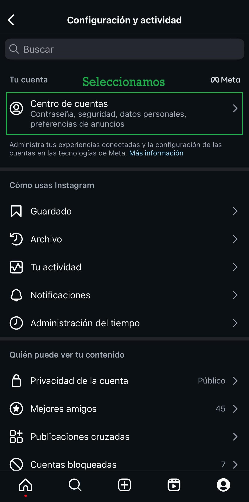
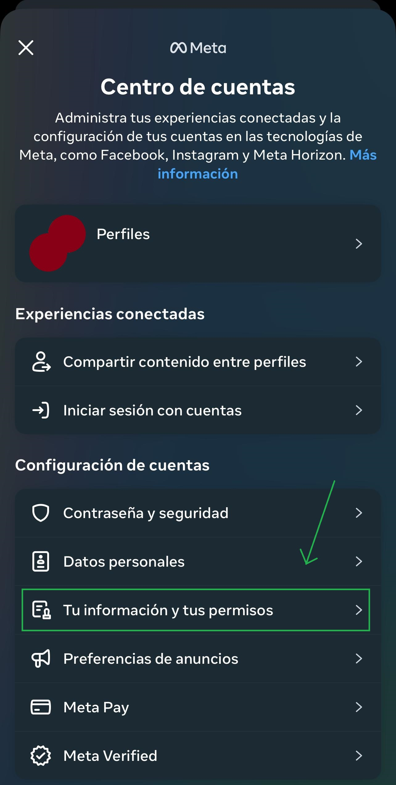
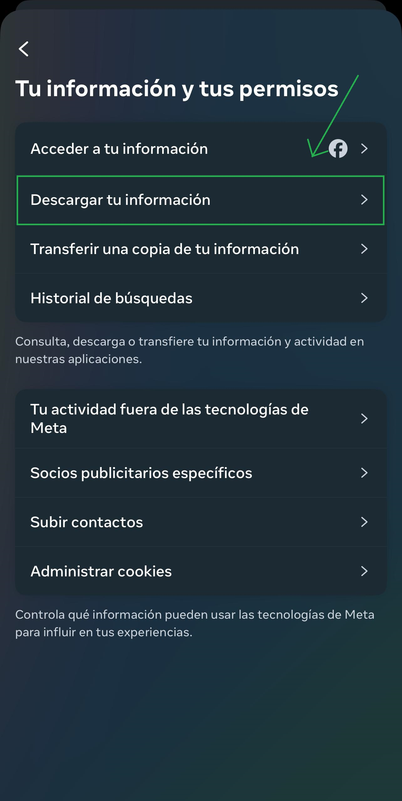
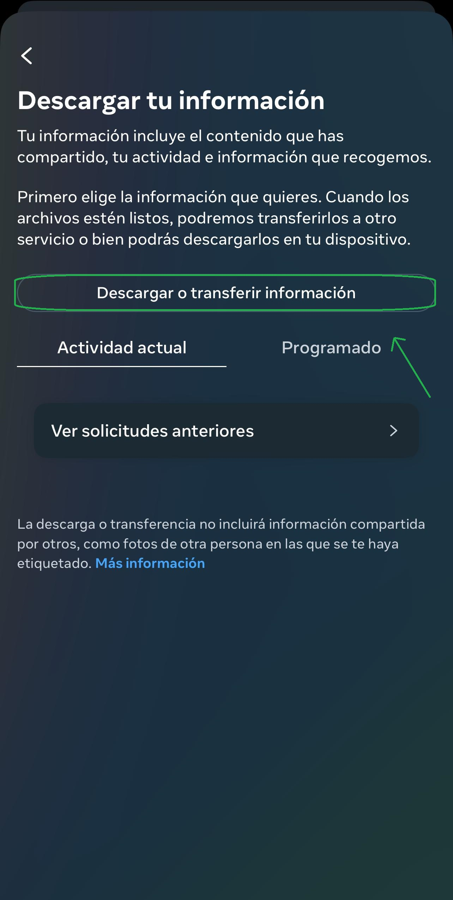
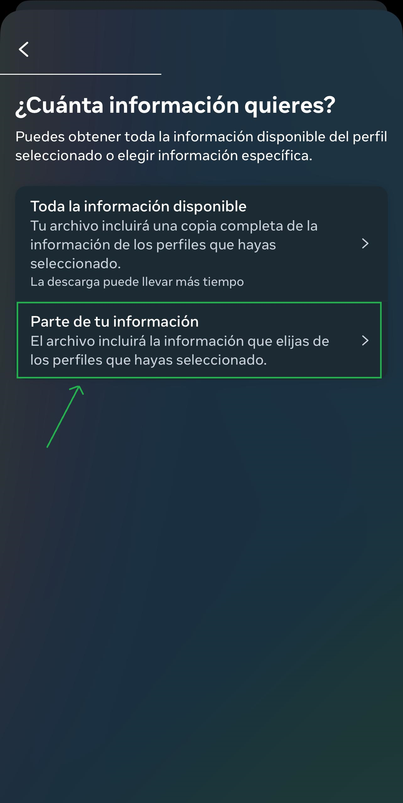
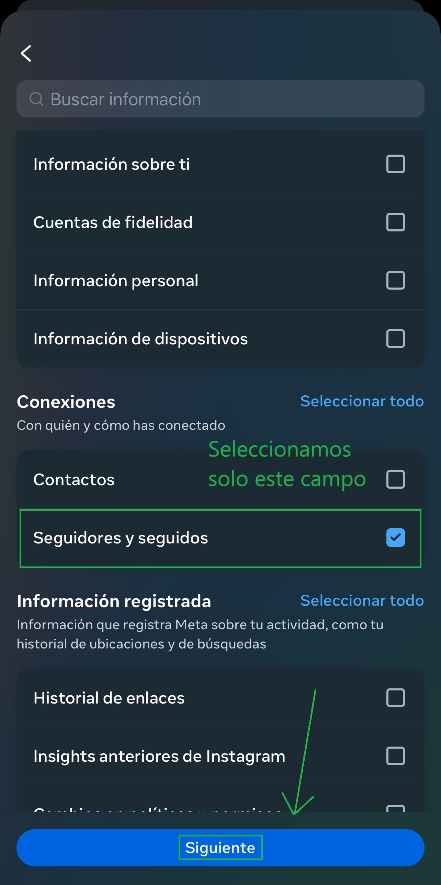
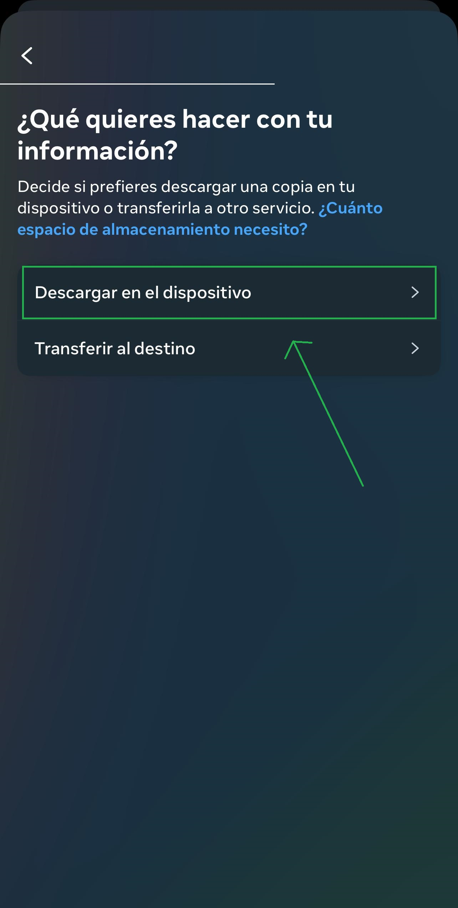
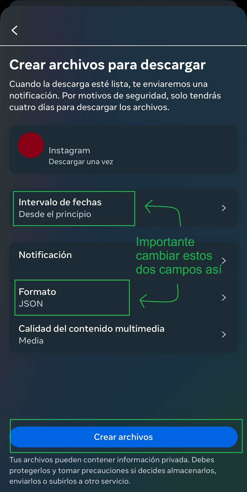

NoSeguidores
NoSeguidores
Con este programa podrás ver las personas que no te siguen de tus seguidos en Instagram!
¡Y sin meter contraseñas, la forma más segura!
¿Cómo descargar los archivos necesarios?
Hazlo con estos sencillos pasos en Instagram.








Espere unos 10 minutos a que Instagram tenga listos los archivos y pueda descargarlos desde el centro de cuentas.